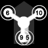

NanoWii setup tool v0.99
Copter layout:

Receiver setup:
Receiver Channel middle:
Receiver Channel Max. Check:
Receiver Channel Min. Check:
ESC / Motor setup:
Min. Command:
(Motors Stop)
Min. Throttle:
(run Idle)
Max. Throttle:
(full speed)
OneShot125:
(UESC only)
3D ESC:
(reversible)
3D ESC middle:
3D Deadband:
(middle+-)
Other settings:
MPU6050
LPF:
Arm on
RX stick:
Servo PWM:
(Bi & Tri)
Yaw
direction:
Tri Yaw:
middle:
Bi Left
Servo dir.
Bi Left
middle:
Bi Right
Servo dir.
Bi Right
middle: